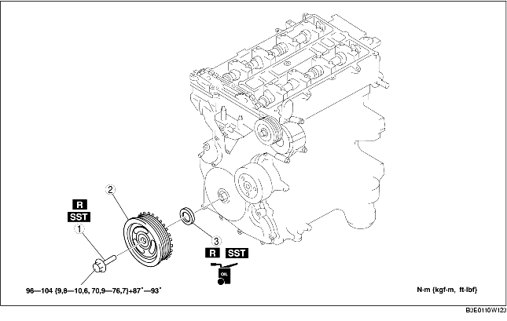

1. Déposer la plaque de trou de bougie (voir la section DÉPOSE/REPOSE DE PLAQUE DE TROU DE BOUGIE [LF].)
2. Déposer le suuport de plaque de trou de bougie.
3. Déposer le cache de batterie (voir la section DEPOSE/REPOSE DE BATTERIE [LF].)
4. Débrancher le câble négatif de la batterie.
5. Débrancher le faisceau de câblage.
6. Déposer les pièces suivantes.
7. Déposer les différents éléments selon l'ordre indiqué dans le tableau.
8. Pour la repose, suivre l'ordre inverse de la dépose.

.
|
1
|
Boulon de verrouillage de poulie de vilebrequin
(voir la section Note sur la dépose de boulon de verrouillage de poulie de vilebrequin.)
(voir la section Note sur la repose de boulon de verrouillage de poulie de vilebrequin.)
|
|
2
|
Poulie de vilebrequin
|
|
3
|
Joint d'huile avant
(voir la section Note sur la dépose de joint d'huile avant.)
(voir la section Note sur la repose de joint d'huile avant.)
|
1. Déposer le bouchon aveugle inférieur du bloc-cylindres.
2. Monter l'outil SST.
3. Faire tourner le vilebrequin dans le sens horloger jusqu'à ce qu'il se trouve dans la position de PMH du cylindre N° 1 (jusqu'à ce que le contrepoids soit attaché à l'outil SST).
4. Maintenir la poulie du vilebrequin à l'aide des outils SST.
1. Découper la lèvre du joint d'huile à l'aide d'une lame de rasoir.
2. Déposer le joint d'huile à l'aide d'un tournevis enveloppé d'un chiffon.
1. Appliquer de l'huile moteur propre sur la lèvre du joint d'huile.
2. Légèrement enfoncer à la main le joint d'huile.
3. Enfoncer doucement et de manière égale le joint d'huile à l'aide de l'outil SST et d'un marteau.
1. Monter l'outil SST sur l'arbre à cames, comme indiqué dans l'illustration.
2. Reposer manuellement le boulon M6 x 1,0.
3. Faire tourner le vilebrequin dans le sens horloger jusqu'à ce qu'il se trouve dans la position de PMH du cylindre N° 1 (jusqu'à ce que le contrepoids soit attaché à l'outil SST).
4. Maintenir la poulie du vilebrequin à l'aide des outils SST.
5. Serrer le boulon de verrouillage de la poulie de vilebrequin dans l'ordre indiqué, en deux étapes, à l'aide de l'outil SST (49 D032 316).
6. Déposer le boulon M6 x 1,0.
7. Déposer l'outil SST de l'arbre à cames.
8. Déposer l'outil SST du bouchon aveugle inférieur de bloc-cylindres.
9. Faire tourner le vilebrequin de deux tours dans le sens horloger, jusqu'à la position de PMH.
10. Reposer le bouchon aveugle inférieur de bloc-cylindres.